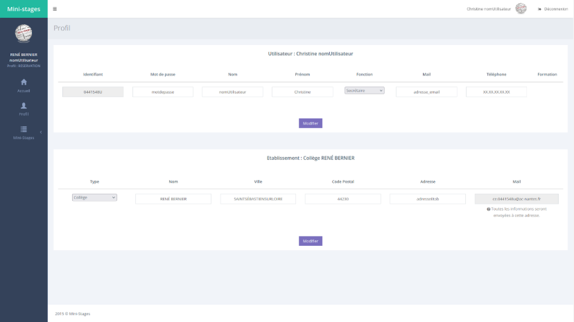
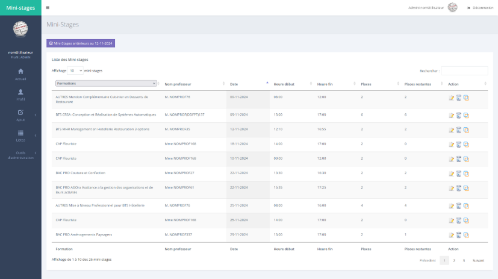
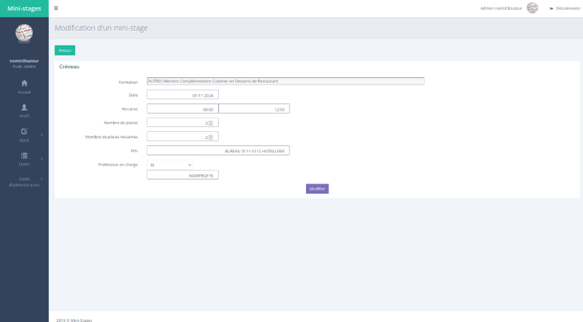
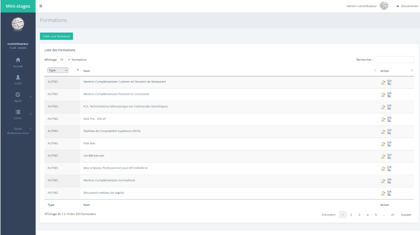

Ministages
Contexte
Ce projet va nous accompagner tout le long de notre 2ème année et va nous permettre de valoriser nos nouveaux concepts et compétences sur un projet. M.Mordelet étant notre client, nous allons passer pas toutes les étapes de créations d'un site web afin de répondre à ses besoins.
Objectif
Dans un premier temps, il nous a fallu améliorer la version en production qui était fonctionnel mais beaucoup de fonctionnalités manquait à l'appel, de plus avec les retours de utilisateurs nous avions toujours quelquechose à améliorer. Au bout de quelque mois, une autre équipe avancait sur un ministage développé avec le framework Symfony en proposant une BDD retravaillé.Le site en quelques photos

